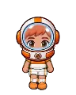

Wiki › Personagens › Comandante Nova

Comandante Nova
Brasil
Os ETs de todos os planetas desafiaram a Terra para a Copa Intergaláctica. E a Terra escolheu VOCÊ.
Onde fica
🗺️ Estação Espacial Galáctica — no meio do mapa
🧭 Viagem: 🚀 No Rio de Janeiro, fale com a Dra. Estela e decole para a Estação Espacial — precisa do Traje de Astronauta.
🧭 Caminho: a viagem já deixa você lá.
Missões que dá (10)
- Primeiro passo na Lua (Nível 298)
- 🚀 A toca do Coelhinho (Nível 303)
- O Capitão da Lua (Nível 326)
- 🚀 A medalha do General (Nível 330)
- O General de Marte (Nível 351)
- 🚀 O brilho no gelo (Nível 356)
- A Rainha dos Anéis (Nível 376)
- 🚀 A memória das estrelas (Nível 381)
- O Imperador Nebular (Nível 396)
- A Copa Intergaláctica (Nível 398)